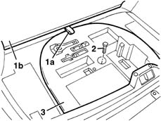

7095A40 tyre repair kit - arranged
- Path
- Procedures > 70 FITTINGS > 7095 MISCELLANEOUS BODYWORK > 7095A body parts and vehicle equipment > 7095A40 tyre repair kit - arranged
- Kind
- repair procedure (removal / refitting; the operation number is the code)
- Applies to
- all engines; all production periods
- Interactive page
- https://sloeber94.github.io/elrnDB-lYpsln/en/#/2429702
Applies to: all engines; all production periods
 Removing
Removing
 Refitting
Refitting7040B10 load platform (luggage platform) trim - r+r
1. Pull the handle (1a) and move the rear seat (1b) forward.
2. Undo the bolt.
3. Remove the preformed element.

Applies to: all engines; all production periods
Refitting
RemovingCheck that the preformed element is not damaged.
Position the preformed element and fasten it using the bolt.
Refit the rear seat.